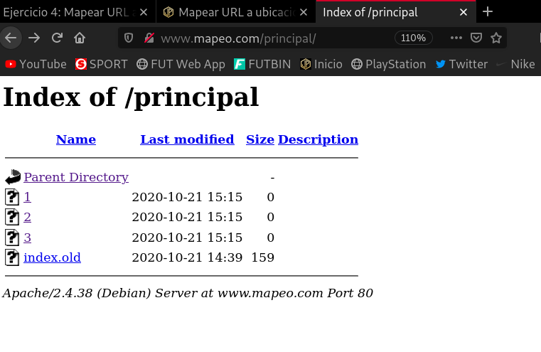
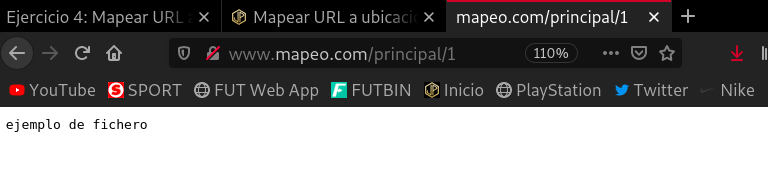
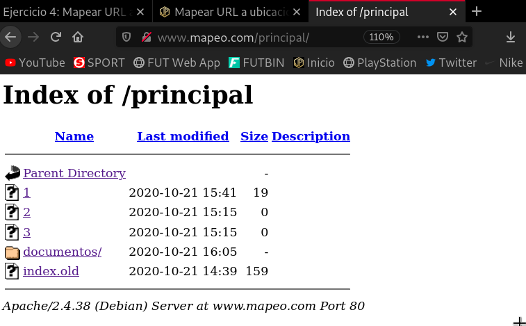
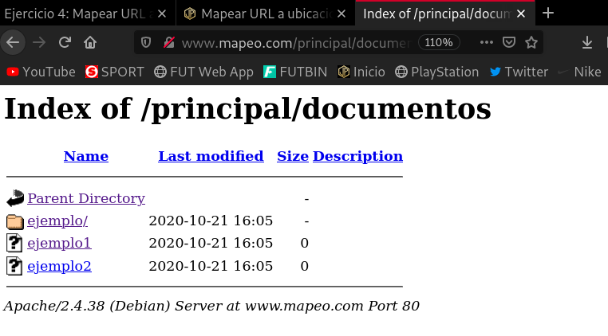
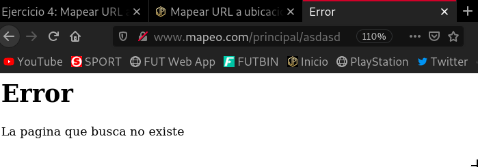
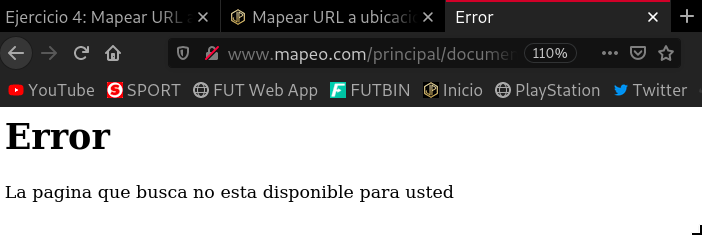

-
Alias: Un alias me permite servir ficheros que no se encuentran en el
DocumentRoot. -
Options: Determina para que sirven las siguientes opciones de funcionamiento:
-
All: habilita todas las opciones, menos
MultiViews. Es la opción por defecto si no se indica ninguna opción. -
FollowSymLinks: sirve para seguir los enlaces simbólicos de un directorio.
-
Indexes: sirve por si el cliente solicita un directorio en el que no exista ninguno de los ficheros especificados en
DirectoryIndex, el servidor ofrecerá un listado de los archivos del directorio. -
MultiViews: permite mostrar una página distinta en función del idioma del navegador.
-
SymLinksIfOwnerMatch: sirve para que el servidor siga los enlaces simbólicos en los que el fichero o directorio final pertenezca al mismo usuario que el propio enlace.
-
ExecCGI: permite la ejecución de aplicaciones CGI en el directorio.
Determina como funciona si delante de las opciones pongo el signo + o -.
Si pones el signo + delante de una opción, habilitas su funcionamiento, pero ojo, estás añadiendo esta opción a las demás opciones que haya configuradas antes. Si pones el signo - deshabilitas una opción de las que en un principio estaban habilitadas.
Es decir, esto es interesante a la hora de establecer, por ejemplo, que opciones tiene un directorio hijo a diferencia de su padre.
-
-
La directiva Redirect nos permite crear redirecciones temporaless o permanentes.
-
Con la directiva
ErrorDocumentse pueden crear Respuestas de error personalizadas. Todo esto se puede llevar a cabo en el fichero/etc/apache2/conf-available/localized-error-pages.conf.
Ejercicios
Crea un nuevo host virtual que es accedido con el nombre www.mapeo.com, cuyo DocumentRoot sea /srv/mapeo.
Antes de nada voy a decir que en mi caso voy a utilizar Vagrant y como software de virtualización VirtualBox.
En el archivo VagrantFile, debemos realizar una configuración para crear una red privada, mediante la cuál poder visualizar los sitios webs fuera de la máquina virtual. Yo he utilizado esta configuración:
config.vm.network "private_network", ip: "192.168.33.10"
En esta máquina virtual, nos dirigimos al fichero de configuración de apache, /etc/apache2/apache2.conf, y debemos asegurarnos que tenemos descomentadas las siguientes líneas, que por defecto vienen comentadas:
<\Directory /srv/>
Options Indexes FollowSymLinks
AllowOverride None
Require all granted
<\/Directory>
Esto indica que mostrará todos los ficheros de las páginas alojadas en la ruta /srv/ y sus hijos.
En la ruta /etc/apache2/sites-available/ creamos un fichero de configuración para esta página. Podemos copiar el fichero llamado 000-default.conf para tener la estructura y luego lo modificamos:
cp 000-default.conf mapeo.conf nano mapeo.conf
Y dentro de este fichero, establecemos la url de la web en el apartado ServerName, e indicamos en la línea DocumentRoot, que se encuentra en /srv/mapeo. Tiene que quedar así:
ServerName www.mapeo.com DocumentRoot /svr/mapeo
Y creamos el enlace simbólico para activar el sitio web:
a2ensite mapeo.conf
Por último para visualizar este sitio web, en nuestro ordenador principal, deberíamos añadir a nuestro /etc/hosts la siguiente línea:
192.168.33.10 www.mapeo.com
Y ya podríamos ver la página web.
1. Cuando se entre a la dirección www.mapeo.com, se redireccionará automáticamente a www.mapeo.com/principal, donde se mostrará el mensaje de bienvenida.
Para automatizar una redirección, debemos configurarla en el archivo de configuración de la página, en este caso, se encuentra en /etc/apache2/sites-available/mapeo.conf.
Debemos introducir la siguiente línea:
Redirect /index.html /principal
Lo que indicamos con esta opción es que al introducir la ruta /index.html que es la que se introduce por defecto cuando accedemos a www.mapeo.com, nos salte a la ruta /principal, que contendrá otro index.html.
¿Te preguntarás porque he especificado /index.html en vez de / que suele ser lo más habitual, no? Pues bien, si pruebas esta opción introduciendo como url de origen / verás que te redirige a un bucle infinito que tendría como resultado una ruta como esta www.mapeo.com/principalprincipalprincipal ....
Después reiniciamos el servicio:
systemctl restart apache2
Si ahora, accedemos a www.mapeo.com, automáticamente nos redirige y nos muestra la página www.mapeo.com/principal.
2. En el directorio principal no se permite ver la lista de los ficheros, no se permite que se siga los enlaces simbólicos y no se permite negociación de contenido. Muestra al profesor el funcionamiento. ¿Qué configuración tienes que poner?
Para ver la lista de ficheros de una dirección, cuando no se encuentre una archivo index.html, hay que añadir la opción Indexes al fichero de configuración de la página.
Antes vamos a renombrar el index.html para que no lo encuentre y nos muestre esta lista. Además voy a crear unos ficheros para que nos los muestre:
root@buster:/srv/mapeo/principal# mv index.html index.old root@buster:/srv/mapeo/principal# touch 1 2 3 root@buster:/srv/mapeo/principal# ls 1 2 3 index.old
Ya podemos añadir la opción Indexes a nuestro mapeo.conf. Tenemos que añadir un bloque como el siguiente:
<\Directory /srv/mapeo> Options Indexes AllowOverride None Require all granted <\/Directory>
Lo que estamos configurando aquí es que el directorio /srv/mapeo y sus hijos, si no encuentran el index.html, muestren la lista de archivos del directorio en el que se encuentre.
Reiniciamos el servicio:
systemctl restart apache2
Si accedemos a www.mapeo.com (que nos redirige a www.mapeo.com/principal), nos muestra esta salida del sitio web.

Podemos acceder e inspeccionar el contenido de los archivos:

3. Si accedes a la página www.mapeo.com/principal/documentos se visualizarán los documentos que hay en /home/usuario/doc. Por lo tanto se permitirá el listado de fichero y el seguimiento de enlaces simbólicos siempre que el propietario del enlace y del fichero al que apunta sean el mismo usuario. Explica bien y pon una prueba de funcionamiento donde se vea bien el seguimiento de los enlaces simbólicos.
Lo primero que debemos hacer es crear un enlace simbólico a la carpeta Documents con el nombre documentos. Para ello:
root@buster:/srv/mapeo/principal# ln -s /home/vagrant/Documents/ documentos root@buster:/srv/mapeo/principal# ls -l total 8 -rw-r--r-- 1 root root 19 Oct 21 15:41 1 -rw-r--r-- 1 root root 0 Oct 21 15:15 2 -rw-r--r-- 1 root root 0 Oct 21 15:15 3 lrwxrwxrwx 1 root root 32 Oct 21 16:13 documentos -> /home/vagrant/Documents/ -rw-r--r-- 1 root root 159 Oct 21 14:39 index.old
Vemos como nos ha creado el enlace simbólico, que apunta a la carpeta /home/vagrant/Documents/, cuyo propietario es root, que esto es muy importante, ya que el propietario del enlace simbólico y del archivo/directorio al que haga referencia tienen que ser el mismo.
Ahora creo un par de ficheros y una carpeta dentro de Documents:
root@buster:/home/vagrant/Documents# touch ejemplo1 ejemplo2 root@buster:/home/vagrant/Documents# mkdir ejemplo root@buster:/home/vagrant/Documents# ls ejemplo ejemplo1 ejemplo2
El propietario de la carpeta Documents es vagrant, y como he comentado antes, tiene que ser el mismo propietario que el enlace simbólico, por tanto, voy a cambiar el propietario de este directorio:
vagrant@buster:~$ sudo chown root:root Documents/ vagrant@buster:~$ ls -l total 32 drwxr-xr-x 2 vagrant vagrant 4096 Oct 13 12:31 Desktop drwxr-xr-x 3 root root 4096 Oct 21 16:05 Documents drwxr-xr-x 2 vagrant vagrant 4096 Oct 13 12:31 Downloads drwxr-xr-x 2 vagrant vagrant 4096 Oct 13 12:31 Music drwxr-xr-x 2 vagrant vagrant 4096 Oct 13 12:31 Pictures drwxr-xr-x 2 vagrant vagrant 4096 Oct 13 12:31 Public drwxr-xr-x 2 vagrant vagrant 4096 Oct 13 12:31 Templates drwxr-xr-x 2 vagrant vagrant 4096 Oct 13 12:31 Videos
Vemos como hemos cambiado el propietario de la carpeta, y en este punto solo nos quedaría añadir la opción SymLinksIfOwnerMatch al fichero de configuración de la web:
<\Directory /srv/mapeo> Options Indexes SymLinksIfOwnerMatch AllowOverride None Require all granted <\/Directory>
Si accedemos a www.mapeo.com (que nos redirige a www.mapeo.com/principal), nos muestra esta salida del sitio web.

Vemos que nos muestra un directorio documentos, y si accedemos a él:

Observamos que tenemos acceso a él y a sus archivos.
4. En todo el host virtual se debe redefinir los mensajes de error de objeto no encontrado y no permitido. Para ello se crearán dos ficheros html dentro del directorio error. Entrega las modificaciones necesarias en la configuración y una comprobación del buen funcionamiento.
Creamos la carpeta error dentro del directorio mapeo, y creamos los archivos html, en este caso 403.html y 404.html.
root@buster:/srv/mapeo# mkdir error root@buster:/srv/mapeo# cd error/ root@buster:/srv/mapeo/error# nano 403.html root@buster:/srv/mapeo/error# nano 404.html root@buster:/srv/mapeo/error# ls 403.html 404.html
Nos movemos al fichero de configuración de la web y añadimos las siguientes líneas:
ErrorDocument 404 /error/404.html ErrorDocument 403 /error/403.html
Reiniciamos el servicio:
systemctl restart apache2
Si introducimos una ruta que no existe, nos sale este error 404:

Vemos que sale el archivo html que hemos configurado para este error. Para el error 403, es decir, cuando intentamos acceder a una ruta a la que no tenemos permisos suficientes:

Nos muestra este error.